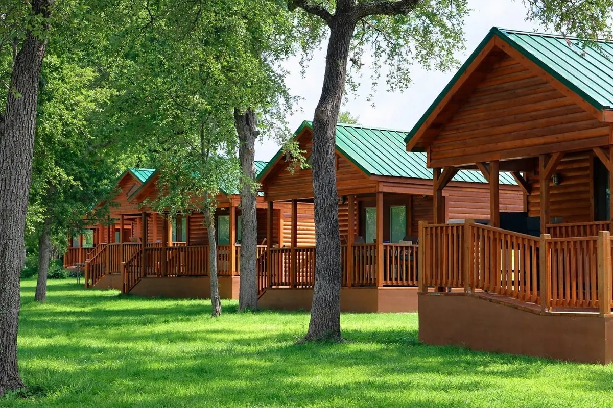
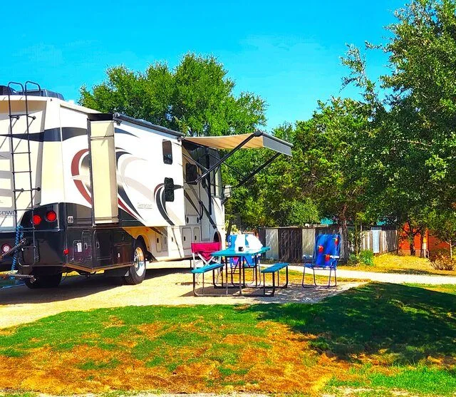
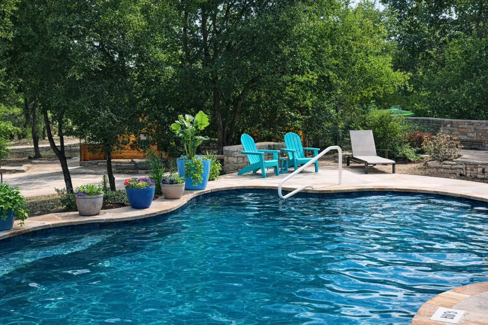

Places to Stay in Pipe Creek, TX
Al's Hideaway is right here in Pipe Creek: 13 handcrafted log cabins, 10 full-hookup pull-through RV sites and 9 cowboy campsites on 20 acres, 15 minutes from Bandera and Boerne.
Check Availability & BookStaying in Pipe Creek
Pipe Creek is a small Hill Country community in Bandera County, tucked between Bandera, Boerne and Helotes. There is no big hotel strip here. Most places to stay are cabins, ranch rentals, bed and breakfasts and RV parks, and that is a big part of why people come: quiet roads, live oaks, wildlife and dark night skies.
Al's Hideaway sits right in Pipe Creek on 20 acres with two creeks. We are a family-run property named for our grandfather Albert, and we built it for people who want to slow down. Stay in one of our 13 log cabins, pull your rig into a full-hookup pull-through RV site, or pitch a tent at a cowboy campsite. Everyone shares the pool, the pavilion, the outdoor kitchen and the on-site store.
How Far Pipe Creek Is From Everything
Drive times from Al's Hideaway.
The Cowboy Capital of the World: rodeos, Main Street honky-tonks and horseback riding.
Staying near Bandera →Straight down Hwy 46 with two red lights. Shops, restaurants and the Hill Country Mile.
Staying near Boerne →Floore's Country Store, Helotes Market Days and good Mexican food up Hwy 16.
Staying near Helotes →The Alamo, the River Walk and the Pearl, close enough for a day trip.
Staying near San Antonio →Pipe Creek's new state natural area, with hiking trails in the hills. We are the closest campground to it.
Cabins near Kronkosky →The Coming King Sculpture Prayer Garden and the Guadalupe River.
Coming King Sculpture →Things to Do Right Here in Pipe Creek
Pipe Creek has some of the most unusual animal visits in Texas, all a few minutes from your cabin.
Private ranch visits with miniature Highland cows at Paisley's Pasture.
Highland cow farm tour →The Camel Farm at Movieland Animals, with camels, kangaroos and water buffalo.
Camel farm →By-appointment visits with capybaras, wallabies, porcupines and alpacas at Happy Tails.
Exotic animal encounters →Everything You Need, Already Here
An on-site store with firewood, snacks, hot food, sno cones, smoothies and souvenirs, plus our Energy & Drink Bar for coffee and espresso.

13 handcrafted cabins with A/C, private bathrooms and WiFi. Four are one-bedroom cabins with full kitchens.

10 full-hookup pull-through RV sites (20/30/50 amp, up to 85 ft) and 9 cowboy campsites for tents.

A swimming pool, two creeks, a pavilion and an outdoor kitchen, under one of the darkest sky corridors in Central Texas.